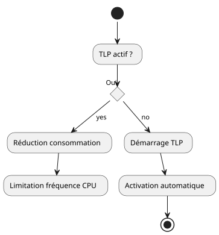
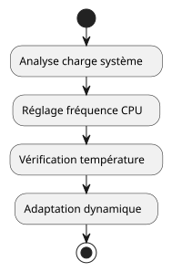

Refroidir et surveiller la température de son laptop sous Ubuntu
15 July 2025
Table of Contents
Vous sentez que votre ordinateur portable chauffe anormalement sous Ubuntu ? Cet article vous propose une démarche logicielle complète pour refroidir, surveiller et maîtriser la température de votre machine.
1. Objectif de ce guide
-
Réduire la température globale de l’ordinateur
-
Optimiser la gestion d’énergie
-
Surveiller les composants critiques (CPU, GPU, etc.)
-
Éviter les ralentissements dus au thermal throttling
2. Prérequis
-
Une machine Ubuntu (20.04 ou supérieure recommandée)
-
Connexion Internet
-
Compétence en ligne de commande (niveau débutant à intermédiaire)
3. Installer et configurer les outils
3.1. lm-sensors pour détecter les capteurs
sudo apt install lm-sensors
sudo sensors-detect
sensors|
Répondez |
3.2. tlp : gestionnaire d’énergie intelligent
sudo apt install tlp tlp-rdw
sudo systemctl enable tlp
sudo systemctl start tlp
3.3. cpufrequtils : limiter les fréquences CPU
sudo apt install cpufrequtils
cpufreq-info
sudo cpufreq-set -g powersave-
powersave: limite les pics de fréquence -
performance: favorise la puissance au détriment de la température
3.4. auto-cpufreq : gestion dynamique simplifiée
git clone https://github.com/AdnanHodzic/auto-cpufreq.git
cd auto-cpufreq
sudo ./auto-cpufreq-installer
sudo auto-cpufreq --install
3.5. thermald : protection thermique automatique
sudo apt install thermald
sudo systemctl enable thermald
sudo systemctl start thermald4. Surveillance en temps réel
4.1. sensors en ligne de commande
watch -n 2 sensors4.2. Option GUI : psensor
sudo apt install psensorInterface graphique simple pour CPU, GPU, ventilateurs.
5. Astuces supplémentaires
-
Fermer les onglets et applications lourdes (ex: navigateurs)
-
Éviter les utilisations intenses sur batterie
-
Surveiller les processus via
htop:
sudo apt install htop
htop6. Nettoyer le système pour limiter les surcharges
sudo apt autoremove
sudo apt autoclean
sudo journalctl --vacuum-time=3d7. Pour aller plus loin
Vous pouvez créer un service systemd personnalisé pour appliquer automatiquement certains réglages au démarrage.
Souhaitez-vous un exemple dans un prochain article ? Faites-le moi savoir !
8. 📚 Conclusion
En combinant ces outils simples, vous gagnerez :
-
Une température CPU maîtrisée
-
Moins de bruit de ventilation
-
Une meilleure autonomie
N’oubliez pas de surveiller vos températures régulièrement pour prévenir toute surchauffe.
Mieux vaut prévenir que fondre son CPU.
— cheroliv